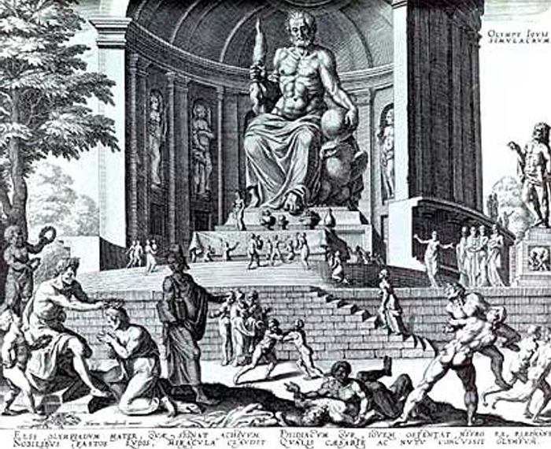

Dzeuso skulptūra Olimpijoje buvo vienas iš Septynių pasaulio stebuklų. Olimpija Senovės Graikijoje buvo svarbus religinis centras, kuriame daugiausiai garbinamas dievas buvo Dzeusas. Šiame mieste buvo rengiamos ir olimpinės žaidynės, šventės ir atletikos varžybos. V a. pr. m. e. Olimpijos gyventojai Dzeuso garbei nusprendė pastatyti šventyklą, kuri iškilo 466–456 m. pr. m. e. Ji buvo pastatyta iš masyvių akmens luitų ir supama kolonų. Šventykla neturėjo dievo skulptūros, todėl jai sukurti buvo išrinktas Fidijas (Feidijas), žinomas Atėnų skulptorius. Anksčiau jis buvo sukūręs dvi Atėnės statulas. Dzeuso statula stovėjo šventykloje, kurios ilgis siekė šešiasdešimt keturis metrus, plotis - dvidešimt aštuonis, vidinė patalpa buvo dvidešimt metrų auksčio. Salės gale soste sėdintis Dzeusas galva rėmė lubas. Iki juosmens apnuogintas Dzeusas buvo padarytas iš medžio, jo „oda“ - iš dramblio kaulo plokščių, o drabužiai – iš aukso lakštų. Dievas sėdėjo soste, inkrustuotame juodmedžiu ir brangakmeniais. Vienoje rankoje jis laikė auksinę pergalės deivės Nikės skulptūrą, kita rėmėsi ilgu skeptru. Statinys buvo apsuptas daugiau nei dviejų metrų storio kolonų. Sosto šonus buvo ištapęs dailininkas Panenas, Fidijo giminaitis ir padėjėjas. Dzeusas buvęs toks didingas, kad Fidijas, baigęs darbą priėjo prie statulos ir paklausė: - Ar tu patenkintas, Dzeusai? Pasigirdo perkūno trenksmas, ir grindys prie statulos kojų įskilo.
©Dain's Studio